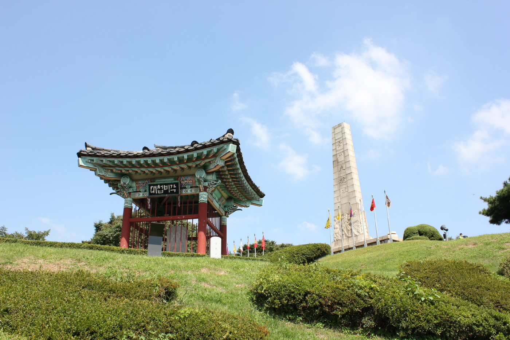
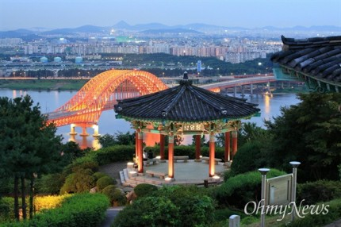
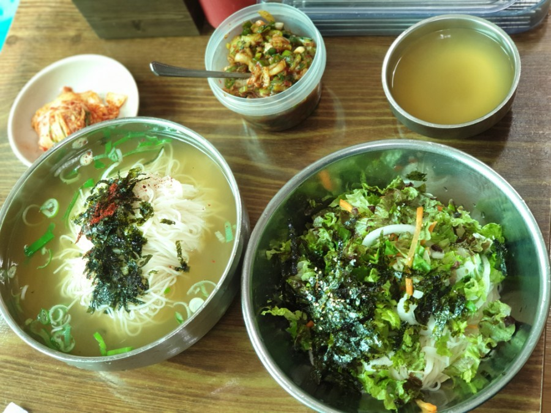
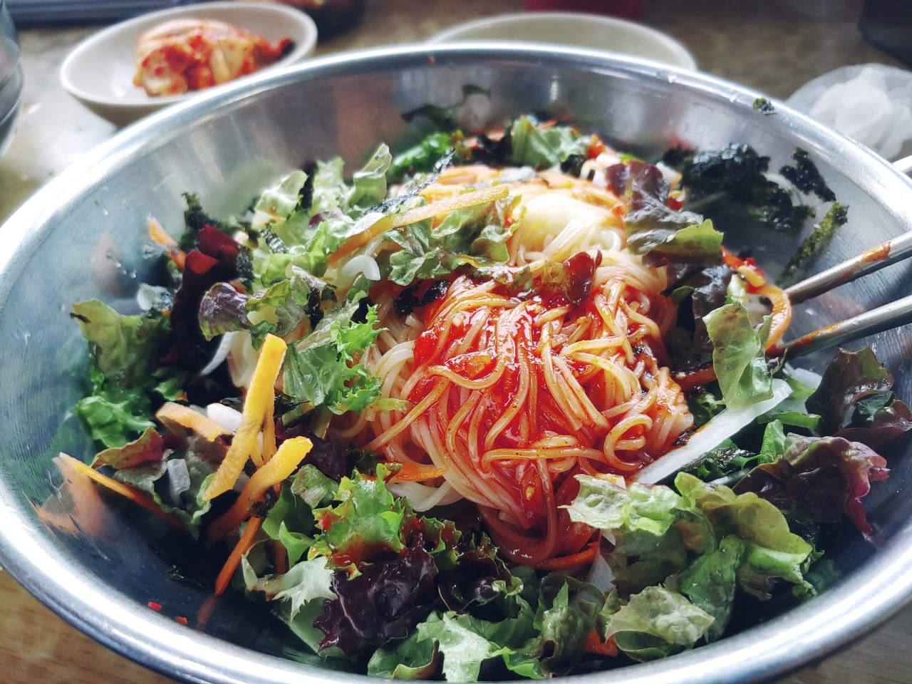
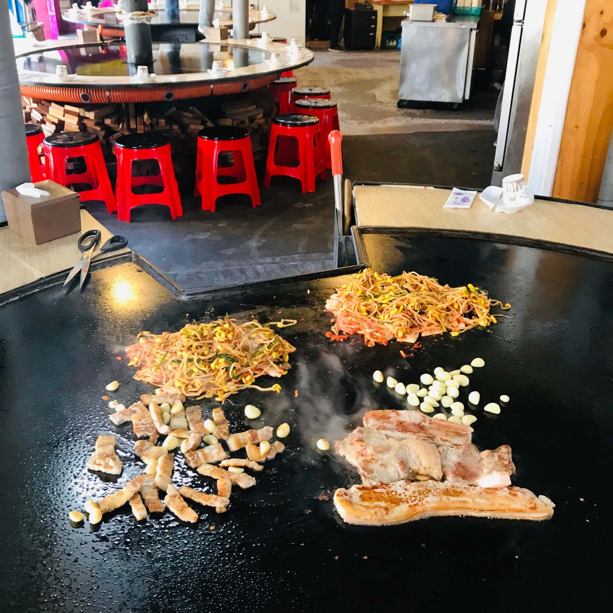
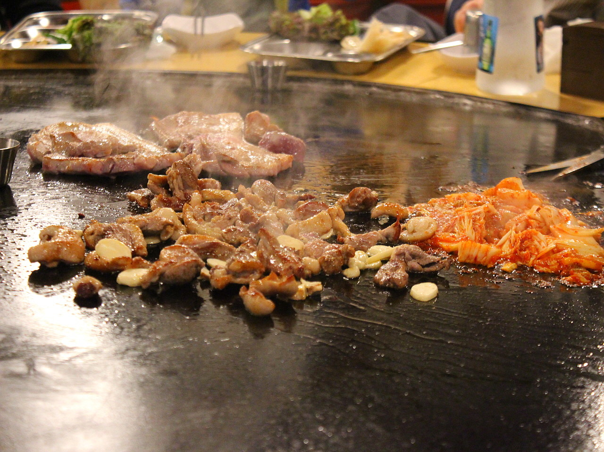
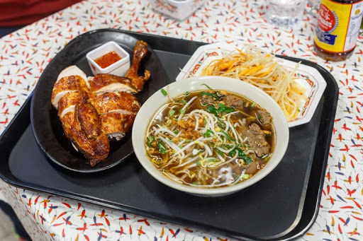
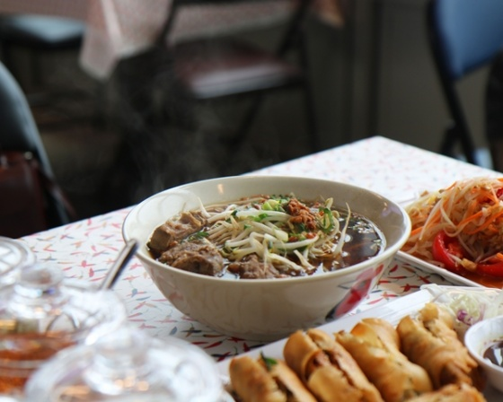

행주산성
'죽기전에 꼭 가봐야할 국내여행 1001선'에 오른 행주산성은 많은 분들에게 익숙한 곳일겁니다. 한강의 호젓한 아름다움을 바라보는 경관이 멋진 행주산성은 한산도대첩, 진주대첩과 함께 임진왜란의 3대 대첩으로 불리는 행주대첩은 역사의 현장입니다. 권율 장군을 중심으로 3만 명의 왜군을 맞아 9일간의 격렬한 전투를 승리로 이끈 힘은 군인은 물론 긴 치마를 짧게 잘라 돌을 나르며 항전한 부녀자들을 비롯한 백성들의 용기와 호국의 정신이 행주산성에 깃들어 있습니다.
서해바다로 흘러가는 한강의 장관을 감상하기에 좋습니다. 기념비에서 바라보이는 모습은 1㎞의 여유로운 산책로와 함께 행주산성의 명물로 손꼽힙니다. 행주산성에서 행주대교를 지 일산호수공원까지 가는 행주나루길 순환코스가 있어 느긋하게 고양시를 둘러보고 싶으신 분들께는 행주나루길을 걷는 것을 추천드립니다. .
행주산성은 매년 7, 8월에 야간개장을 하는데 정상에서 바라보는 야경은 사진작가들의 출사 장소로 인기가 높습니다. 2020년 야간관광 100선에 선정된 행주산성은 저녁노을이 아름다운 한강하구의 경치 감상과 더불어 주변 행주마을에서 저녁식사, 카페거리에서 차 한 모금 등 힐링 장소로 각광받고 있습니다
매년 1월 1일에는 행주산성에서 해돋이를 볼 수 있으니 서서울 지역 주민들과 경기 북부 지역 주민들에게 해돋이 장소로 추천드립니다.
원조 국수집
 <원조 국수집>은 행주산성 입구에 위치하고 있어 근처의 국수집 중 가장 오래된 국수집 입니다. 한강을 따라 라이딩하는 자전거 라이더 들에게 특히 인기인 국수전문점입니다. 착한가격에 양도 엄청 푸짐하며 맛있습니다. 인기가 많은 만큼 사람들이 많이 찾아 많이 기다릴 수 있으니 여유있게 방문하시는 것을 추천드립니다.
잔치국수와 비빔국수가 주 메뉴로 잔치국수는 꼭 드시는 것을 강추합니다!
아이맛이야 장작철판구이
 '전지적 참견시점'의 애청자시라면 이 곳은 꼭 보셨을 겁니다. 이 곳은 이영자씨가 맛집이라고 추천한 곳이기 때문입니다. 뿐만 아니라 생생정보통, vj 특공대등 많은 방송에 나와 매우 유명합니다. 초대형 철판에 고기들을 구어주어 눈요기로도 좋으며 맛도 뛰어납니다. 고기들 뿐만 아니라 김치, 콩나물, 마늘도 같이 구어주어 엄청나게 맛있는 식사를 하실수 있습니다! 고기를 주문하시면 국수도 같이 나오니 꼭 한번 찾아가 보세요!
*주소 : 경기 고양시 덕양구 행주로17번길 5-5스타필드 고양
스타필드 고양은 쇼핑, 레저, 힐링이 한 곳에서 이뤄지는 쇼핑 테마파크로 아침부터 저녁까지 가족과 친구들이 함께 쇼핑하고, 맛있는 음식과 레저를 즐기고, 편히 쉴 수도 있는 곳입니다. 메가박스가 드러서 있으며 다양한 옷가게들과 카카오 프렌즈 샵과 같이 다양한 문구류 매장이 있어서 쇼핑하기에 매우 적합합니다. 지하에는 '이마트 트레이더스'가 있어 식품들을 값싸게 살 수 있으며 맨 위층에는 '아쿠아필드'가 있습니다. '아쿠아필드'는 고급 찜질방으로 많은 분들이 여기에서 힐링을 즐깁니다. 이외에도 토이킹덤과 같이 어린이들을 위한 공간이 있어 가족들이 즐기기 매우 좋습니다.
지하철 3호선 삼송역에서 내려서 10분동안 걸어오시거나 역에 있는 마을버스를 타면 오실 수 있습니다.
소이연남
 소이연남은 스타필드 내에 위치한 맛집입니다. 연남동에 위치한 태국 요리 전문점 ‘소이연남’의 분점입니다. 대표 메뉴는 소뼈와 무로 진하게 우려낸 고기 국물에 계피, 샐러리, 감초, 양파, 고수, 뿌리, 팔각, 후추, 마늘, 등의 각종 향신료로 풍미를 더한 ‘소고기 국수’입니다. 진한 육수에 쫄깃한 탄성이 살아있는 중면과 아삭한 숙주, 부드러운 아롱사태의 조화가 일품입니다. 태국식 스프링롤 ‘소이 뽀삐아’도 인기 메뉴 중 하나로 새우, 버섯, 죽순 등 다양한 재료를 춘권피로 말아서 튀겨내 느끼함은 줄이고 바삭함을 더한 것이 특징입니다. 건포도로 만든 새콤달콤한 특제소스를 곁들이면 더욱 맛있게 즐길 수 있습니다. 갓 김장한 김치 맛의 태국식 파파야 샐러드 ‘쏨땀’도 별미입니다.